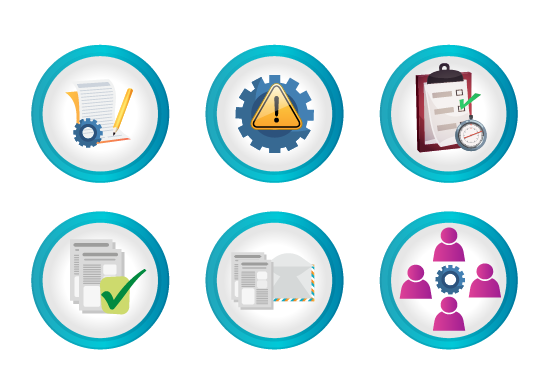
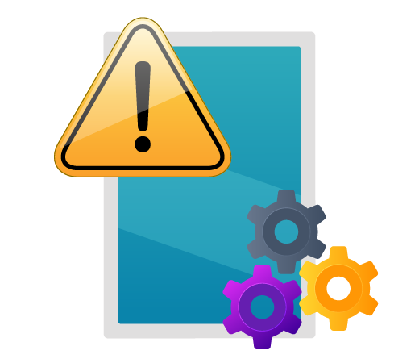
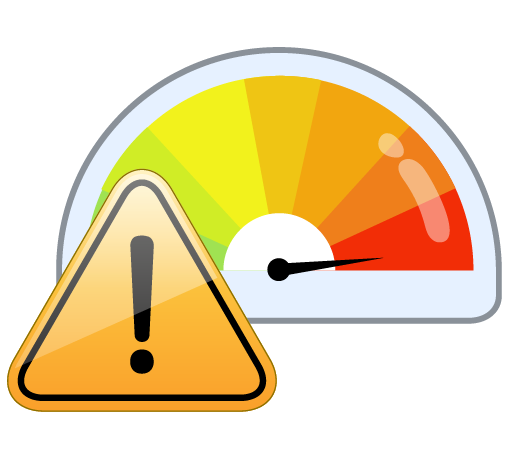

Es una ley emitida en Estados Unidos aplicable a las empresas que cotizan sus acciones en el mercado de valores de ese país. Esta Ley busca que las empresas mejoren la calidad y transparencia de sus informes financieros, con el fin de proteger a los inversionistas.
Pasa el mouse sobre el dato de interés
Dato de interés
Las Tres Líneas
Inicio
Grupo Aval y sus filiales hemos estructurado las funciones y responsabilidades frente a la gestión de riesgos, siguiendo la metodología de las tres líneas, esto es, considerando:
1. La gestión por cada línea de negocio.
2. Una función de gestión del riesgo independiente.
3. Una revisión independiente.
Pulsa los botones para conocer a profundidad cada una de estas líneas.
Primera Línea
Los actores clave de la Primera Línea son los Dueños de Proceso, quienes tienen las siguientes responsabilidades:

Segunda Línea
Los actores clave de la Segunda Línea son los Equipos SOX, los cuales deben:
Tercera Línea
El actor clave de la Tercera Línea es la Contraloría Interna, que tiene las siguientes responsabilidades:
Evaluación del Sistema de Control Interno sobre el Reporte Financiero
No basta con que el Banco haya diseñado adecuadamente los controles SOX, sino que debe validar que el Sistema de Controles Interno es efectivo mediante las Pruebas de Diseño y Efectividad de la Contraloría, para ello debe asegurar que la implementación y la ejecución de los controles se realice tal y como se diseñaron, de forma permanente, según la frecuencia del control y a lo largo de todo el año.
Pasa el mouse sobre el dato de interés
Dato de interés
Deficiencias
Inicio
Si dentro de las revisiones independientes adelantadas por los auditores (internos o externos) se identifican controles cuyo diseño es inadecuado o cuya operatividad es inefectiva, se determinará la existencia de una deficiencia, la cual puede ser de dos tipos.
Pulsa los botones para conocer cada uno de ellos.
Diseño
Son errores o diferencias entre la forma en que se realiza el control y la forma en que está escrito, o errores en la descripción del control porque no cumple con los componentes y/o características mínimas de un diseño adecuado.

Operatividad o efectividad
Son errores en la ejecución del control tales como:
Criticidad de las deficiencias

Pasa el mouse sobre los textos resaltados
De acuerdo con su criticidad, las deficiencias SOX se clasifican así:
Deficiencia de Control
Deficiencia Significativa
Debilidad Material
Tablero de control
Como parte de la Gestión Integral de Riesgo a nivel consolidado, se ha definido el Tablero de control como mecanismo de monitoreo de riesgos, a efectos de presentar de manera oportuna y ejecutiva los resultados de la gestión de riesgos en cada fase (semestralmente) a través de los tres indicadores que se muestran en la siguiente tabla.
INDICADOR(ES) NIVEL 1
LÍMITES
Apetito
Límite de apetito
Tolerancia
Capacidad
Cantidad de Deficiencias de Control
0.0 % - 3,5 %
>=3,6 % - 5,0 %
>=5,1 % - 6,5 %
>6,5 %
Impacto cuantitativo de los hallazgos
0,1 % - 0,5 %
>=0,6 % - 1,0 %
>=1,1 % - 4,3 %
>=4,4 %
Criticidad de los hallazgos
0,0 % - 10,0 %
>=10,1 % - 20,0 %
>=20,1 % - 30,0 %
>=30,0 %
Actividad
Llegó el momento de recuperar el manuscrito. ¡Para ello deberás aplicar tus conocimientos!
Pulsa el botón “Ir a las preguntas” para resolver algunas actividades.
IR A LAS PREGUNTAS
El Banco Popular, por ser filial del Grupo Aval, tiene la obligación de certificar anualmente la efectividad del Sistema de Control Interno sobre el Reporte Financiero de acuerdo con los lineamientos corporativos.
Diseñar e implementar los controles necesarios para mitigar los riesgos.
Actuar como dueños primarios de su respectivo proceso/control para asegurar su adecuada documentación.
Conocer y entender los riesgos y controles a su cargo.
Suministrar la información relacionada con evidencia de los controles a su cargo a entes de vigilancia y control, internos y externos, de forma completa y oportuna.
Estar informados de los resultados de las pruebas de diseño y de validación de los controles, y participar en el proceso de discusión de estos.
Realizar el empalme adecuado, suficiente y oportuno en caso de retiro temporal o permanente de los colaboradores que ejecutan controles SOX.
Apoyar a los Dueños de Proceso/Controles en la identificación y aseguramiento del diseño de controles.
Hacer seguimiento a los resultados de las evaluaciones independientes de diseño.
Apoyar el proceso de diseño de planes de remediación.
Preparar el Tablero de Control de su Entidad para reporte a Grupo Aval y monitorear la gestión de sus Subordinadas a través de los tableros de éstas.
Asegurar integridad y exactitud del RDC, incluyendo la cuantificación de impacto y probabilidad de ocurrencia, y apoyar en la identificación de controles compensatorios.
Realizar la validación independiente de la efectividad de los controles de acuerdo con el plan de trabajo aprobado por el Comité de Auditoría.
Discutir e informar a los dueños de procesos la conclusión de sus validaciones.
Realizar y documentar la evaluación independiente del diseño de los controles, de acuerdo con su juicio y su plan de trabajo aprobado por el Comité de Auditoría.
Comunicar los resultados de sus evaluaciones independientes a las instancias asignadas en el Banco.
Recuerda que los Dueños de Proceso son los responsables de ejecutar de forma uniforme y permanente los controles SOX a su cargo, así como de dejar la documentación suficiente que evidencia la ejecución de estos.
No se ejecutó tal cual como está diseñado.
En los controles automáticos, no se realizó la parametrización de forma correcta.
Se ejecutó en una periodicidad errada.
No se dejaron los soportes que demuestran la ejecución del control.
El error contable generado por la deficiencia SOX fue inferior al 1 % de la UAI de los Estados Financieros Consolidados de Grupo Aval.
El error contable generado por la deficiencia SOX fue superior al 1 % e inferior al 4,4 % de la UAI de los Estados Financieros Consolidados de Grupo Aval.
El error contable generado por la deficiencia SOX fue superior al 4,4 % de la UAI de los Estados Financieros Consolidados de Grupo Aval.